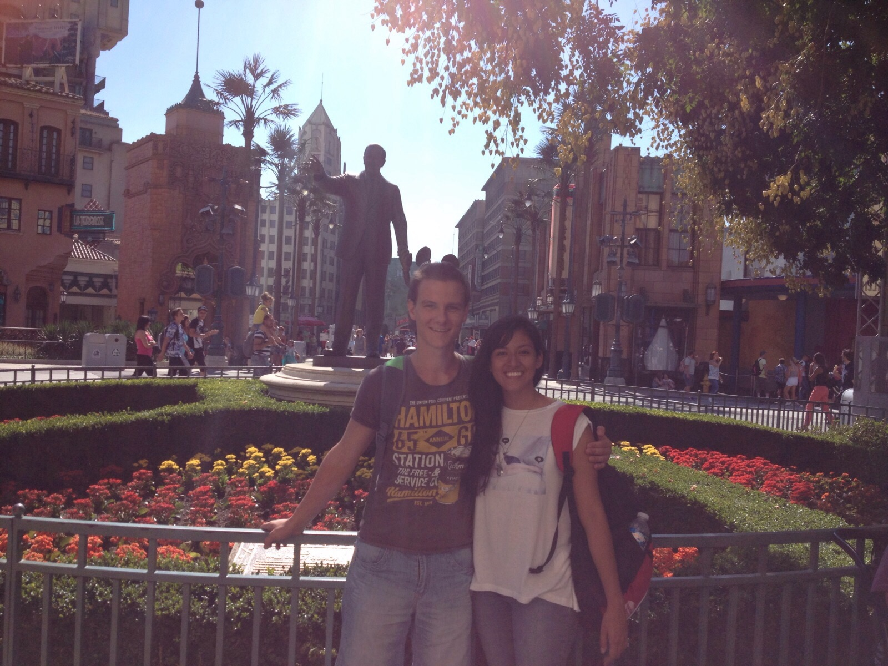
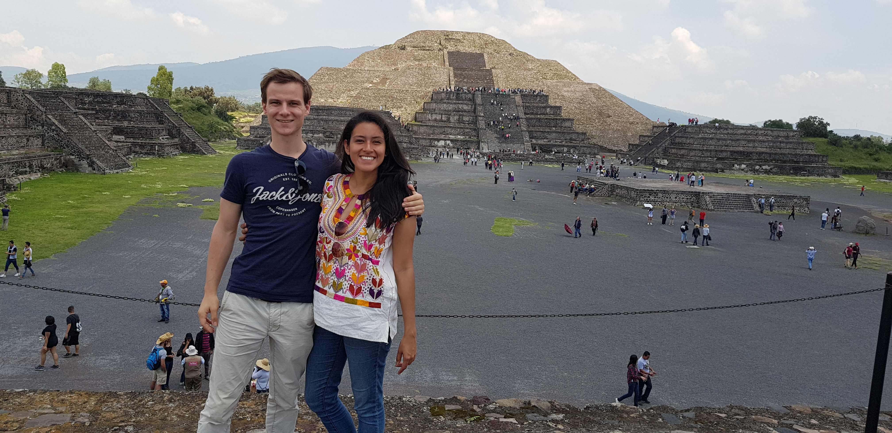
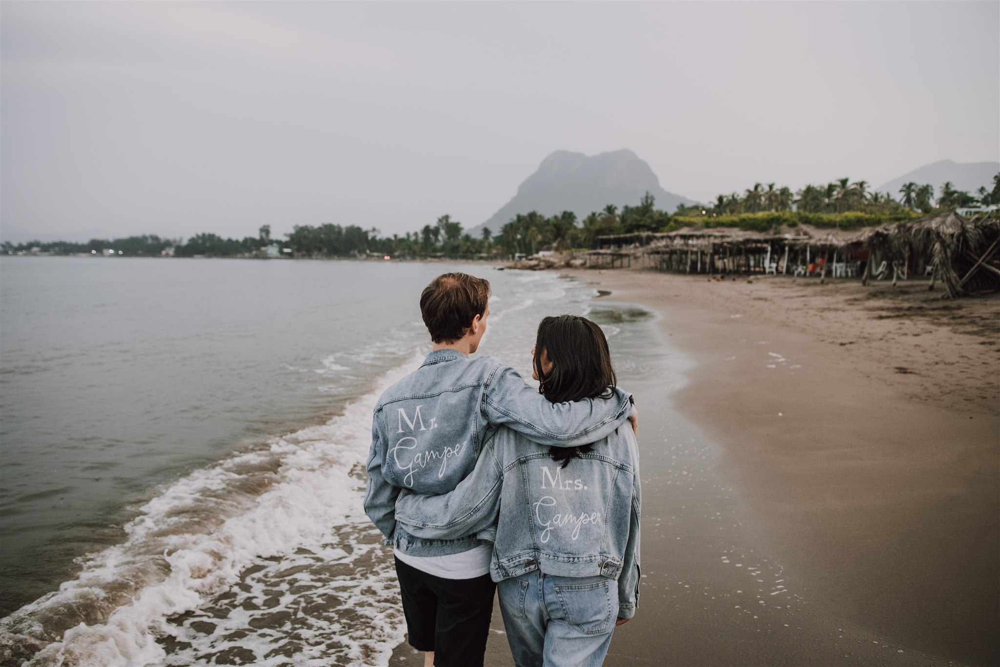

Nuestra historia


El comienzo...
Habiendo crecido en diferentes partes del mundo (México y Suiza), nuestros caminos se cruzaron por primera vez en Vichy, Francia. Nuestra historia comenzó en un entorno no tan romántico… una escuela de idiomas. Ni nos imaginábamos lo que estaba por venir. Durante las 4 semanas que estuvimos juntos en la misma clase, nos dimos cuenta que sentíamos algo más de lo podríamos expresar (¡porque el francés no es fácil! jaja). Después de un largo pero divertido día en Disneylandia y bajo una noche llena de fuegos artificiales! Decidimos ingenuamente enamorados iniciar nuestra relación.

Amor más allá del Atlántico...
Las cosas se complicaron cuando Brenda comenzó sus estudios de intercambio en Montpellier (Francia), al mismo tiempo que Fedor tuvo que incorporarse al ejército durante un año completo! Nos llamábamos todos los días, aunque fuera por unos minutos. Nada de esto nos impidió pasar tanto tiempo como pudimos juntos. Lamentablemente, la estancia de Brenda en Montpellier concluyó después de año y medio, cuando tuvo que regresar a México para terminar sus estudios de licenciatura. Mientras tanto, Fedor comenzó sus estudios de licenciatura en informática. Cada 6 meses nos visitábamos en México o en Suiza y descubríamos más sobre la cultura de cada uno.

Y nos comprometimos...
Después de 5 años de vivir a distancia, Brenda vino a Suiza para comenzar un programa de maestría y finalmente estar juntos en el mismo país. Después de unos meses, el 28 de noviembre de 2020 para ser exactos, Fedor le propuso matrimonio a Brenda y obtuvo la respuesta más maravillosa que hubiera podido desear. Sí. ¡Me casaré contigo! En julio de 2020, nos dimos el primer "sí, quiero" en nuestra boda civil en la hermosa ciudad de Berna. Ahora, después de seis largos y muy esperados meses, por fin vamos a unirnos en matrimonio para siempre con la bendición de Dios en nuestra iglesia local en México.

Mi hogar está donde quiera que tú estés...
Mirando hacia atrás, parece casi imposible que nos hayamos conocido.
Fedor sin una razón clara además de mejorar su francés, ¡un idioma que ni siquiera le gustaba! viajo a Francia y al mismo tiempo, Brenda tuvo la oportunidad de visitar Europa por primera vez, ¡una oportunidad única en la vida!
Venimos de lugares diferentes, hablábamos idiomas diferentes, pero sólo teníamos una cosa en común, nuestro amor por Dios. Creemos que nuestra historia no es una coincidencia.